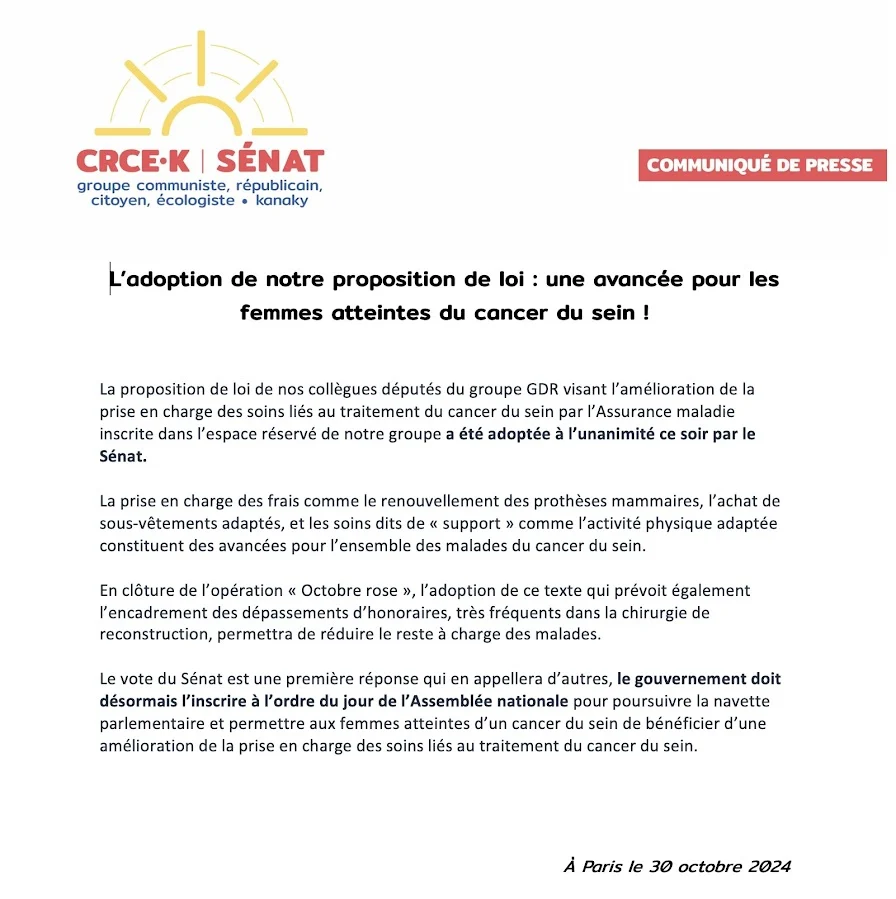

Actualité parlementaire
Cancer du sein. Le groupe communiste salue l’adoption de sa proposition au Sénat
Date indiquée par Facebook · 31 octobre 2024
Repères éditoriaux
Nous avons relayé le communiqué du groupe CRCE-K après le vote du 30 octobre 2024. Le Sénat a adopté en première lecture, à l’unanimité des suffrages exprimés, la proposition de loi sur la prise en charge des soins liés au cancer du sein.
Texte conservé avec la publication
Depuis plus d'un an, le PCF mène campagne et porte cette proposition de loi relative à la prise en charge par l'Assurance maladie des soins liés au traitement du cancer du sein depuis la rencontre marquante avec Marie-Noëlle Martin dans une réunion publique sur les droits des femmes à Aurillac...
Touchée par la maladie, Marie-Noëlle avait listé et dénoncé les restes à charge importants auxquels elle devait faire face notamment en matière de soins dits supports - très mal nommés "de confort" - pourtant indispensables pour tolérer les traitements et se reconstruire physiquement et psychologiquement.
ON S'ÉTAIT ALORS PROMIS D'ALLER JUSQU'AU BOUT !
Cette victoire est la conséquence d'un travail commun et de longue haleine.

Sources
Archive rouge · export Facebook · AR-0002-FB-01256
À lire aussi · Au Sénat, les communistes défendent la prise en charge des soins liés au cancer du sein